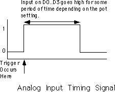

| Table of Content | Chapter Twenty Four (Part 2) |
|
| Table of Content | Chapter Twenty Four (Part 2) |
|
| CHAPTER
TWENTY FOUR: THE PC GAME ADAPTER (Part 1) |
||
| 24.1 -
Typical Game Devices 24.2 - The Game Adapter Hardware 24.3 - Using BIOS' Game I/O Functions 24.4 - Writing Your Own Game I/O Routines 24.5 - The Standard Game Device Interface (SGDI) 24.5.1 - Application Programmer's Interface (API) 24.5.2 - Read4Sw 24.5.3 - Read4Pots: 24.5.4 - ReadPot 24.5.5 - Read4: 24.5.6 - CalibratePot 24.5.7 - TestPotCalibration 24.5.8 - ReadRaw 24.5.9 - ReadSwitch 24.5.10 - Read16Sw 24.5.11 - Remove 4.5.12 - TestPresence 24.5.13 - An SGDI Driver for the Standard Game Adapter Card 24.6 - An SGDI Driver for the CH Products' Flight Stick Pro' 24.7 - Patching Existing Games |
Copyright 1996 by Randall Hyde
All rights reserved. Duplication other than for immediate display through a browser is prohibited by U.S. Copyright Law. This material is provided on-line as a beta-test of this text. It is for the personal use of the reader only. If you are interested in using this material as part of a course, please contact rhyde@cs.ucr.edu Supporting software and other materials are available via anonymous ftp from ftp.cs.ucr.edu. See the "/pub/pc/ibmpcdir" directory for details. You may also download the material from "Randall Hyde's Assembly Language Page" at URL: http://webster.ucr.edu Notes: This document does not contain the laboratory exercises, programming assignments, exercises, or chapter summary. These portions were omitted for several reasons: either they wouldn't format properly, they contained hyperlinks that were too much work to resolve, they were under constant revision, or they were not included for security reasons. Such omission should have very little impact on the reader interested in learning this material or evaluating this document. This document was prepared using Harlequin's Web Maker 2.2 and Quadralay's Webworks Publisher. Since HTML does not support the rich formatting options available in Framemaker, this document is only an approximation of the actual chapter from the textbook. If you are absolutely dying to get your hands on a version other than HTML, you might consider having the UCR Printing a Reprographics Department run you off a copy on their Xerox machines. For details, please read the following EMAIL message I received from the Printing and Reprographics Department:
We are currently working on ways to publish this text in a form other than HTML (e.g., Postscript, PDF, Frameviewer, hard copy, etc.). This, however, is a low-priority project. Please do not contact Randall Hyde concerning this effort. When something happens, an announcement will appear on "Randall Hyde's Assembly Language Page." Please visit this WEB site at http://webster.ucr.edu for the latest scoop. Redesigned 10/2000 with "MS FrontPage 98" using
17" monitor 1024x768 |
|
One need look no farther than the internals of several popular games on the PC to discover than many programmers do not fully understand one of the least complex devices attached to the PC today - the analog game adapter. This device allows a user to connect up to four resistive potentiometers and four digital switch connections to the PC. The design of the PC's game adapter was obviously influenced by the analog input capabilities of the Apple II computer, the most popular computer available at the time the PC was developed. Although IBM provided for twice the analog inputs of the Apple II, thinking that would give them an edge, their decision to support only four switches and four potentiometers (or "pots") seems confining to game designers today - in much the same way that IBM's decision to support 256K RAM seems so limiting today. Nevertheless, game designers have managed to create some really marvelous products, even living with the limitations of IBM's 1981 design.
IBM's analog input design, like Apple's, was designed to be dirt cheap. Accuracy and performance were not a concern at all. In fact, you can purchase the electronic parts to build your own version of the game adapter, at retail, for under three dollars. Indeed, today you can purchase a game adapter card from various discount merchants for under eight dollars. Unfortunately, IBM's low-cost design in 1981 produces some major performance problems for high-speed machines and high-performance game software in the 1990's. However, there is no use crying over spilled milk - we're stuck with the original game adapter design, we need to make the most of it. The following sections will describe how to do exactly that.
The game adapter is nothing more than a computer interface to various game input devices. The game adapter card typically contains a DB15 connector into which you plug an external device. Typical devices you can obtain for the game adapter include paddles, joysticks, flight yokes, digital joysticks, rudder pedals, RC simulators, and steering wheels. Undoubtedly, this is but a short list of the types of devices you can connect to the game adapter. Most of these devices are far more expensive that the game adapter card itself. Indeed, certain high performance flight simulator consoles for the game adapter cost several hundred dollars.
The digital joystick is probably the least complex device you can connect to the PC's game port. This device consists of four switches and a stick. Pushing the stick forward, left, right, or pulling it backward closes one of the switches. The game adapter card provides four switch inputs, so you can sense which direction (including the rest position) the user is pressing the digital joystick. Most digital joysticks also allow you to sense the in-between positions by closing two contacts at once. for example, pushing the control stick at a 45 degree angle between forward and right closes both the forward and right switches. The application software can sense this and take appropriate action. The original allure of these devices is that they were very cheap to manufacture (these were the original joysticks found on most home game machines). However, as manufacturers increased production of analog joysticks, the price fell to the point that digital joysticks failed to offer a substantial price difference. So today, you will rarely encounter such devices in the hands of a typical user.
The game paddle is another device whose use has declined over the years. A game paddle is a single pot in a case with a single knob (and, typically, a single push button). Apple used to ship a pair of game paddles with every Apple II they sold. As a result, games that used game paddles were still quite popular when IBM released the PC in 1981. Indeed, a couple manufacturers produced game paddles for the PC when it was first introduced. However, once again the cost of manufacturing analog joysticks fell to the point that paddles couldn't compete. Although paddles are the appropriate input device for many games, joysticks could do just about everything a game paddle could, and more. So the use of game paddles quickly died out. There is one thing you can do with game paddles that you cannot do with joysticks - you can place four of them on a system and produce a four player game. However, this (obviously) isn't important to most game designers who generally design their games for only one player.
Rudder pedals are really nothing more than a specially designed game paddle designed so you can activate them with your feet. Many flight simulator games take advantage of this input device to provide a more realistic experience. Generally, you would use rudder pedals in addition to a joystick device.
A joystick contains two pots connected with a stick. Moving the joystick along the x-axis actuates one of the pots, moving the joystick along the y-axis actuates the other pot. By reading both pots, you can roughly determine the absolute position of the pot within its working range.
An RC simulator is really nothing more than a box containing two joysticks. The yoke and steering wheel devices are essentially the same device, sold specifically for flight simulators or automotive games. The steering wheel is connected to a pot that corresponds to the x-axis on the joystick. Pulling back (or pushing forward) on the wheel activates a second pot that corresponds to the y-axis on the joystick.
Certain joystick devices, generically known as flight sticks, contain three pots. Two pots are connected in a standard joystick fashion, the third is connected to a knob which many games use for the throttle control. Other joysticks, like the Thrustmaster' or CH Products' FlightStick Pro, include extra switches including a special "cooley switch" that provide additional inputs to the game. The cooley switch is, essentially, a digital pot mounted on the top of a joystick. Users can select one of four positions on the cooley switch using their thumb. Most flight simulator programs compatible with such devices use the cooley switch to select different views from the aircraft.
The game adapter hardware is simplicity itself. There is a single input port and a single output port. The input port bit layout is
The four switches come in on the H.O. four bits of I/O port 201h. If the user is currently pressing a button, the corresponding bit position will contain a zero. If the button is up, the corresponding bit will contain a one.
The pot inputs might seem strange at first glance. After all, how can we represent one of a large number of potential pot positions (say, at least 256) with a single bit? Obviously we can't. However, the input bit on this port does not return any type of numeric value specifying the pot position. Instead, each of the four pot bits is connected to an input of a resistive sensitive 558 quad timer chip. When you trigger the timer chip, it produces an output pulse whose duration is proportional to the resistive input to the timer. The output of this timer chip appears as the input bit for a given pot. The schematic for this circuit is
Normally, the pot input bits contain zero. When you trigger the timer chip, the pot input lines go high for some period of time determined by the current resistance of the potentiometer. By measuring how long this bit stays set, you can get a rough estimate of the resistance. To trigger the pots, simply write any value to I/O port 201h. The actual value you write is unimportant. The following timing diagram shows how the signal varies on each pot's input bit:

The only remaining question is "how do we determine the length of the pulse?" The following short loop demonstrates one way to determine the width of this timing pulse:
mov cx, -1 ;We're going to count backwards
mov dx, 201h ;Point at joystick port.
out dx, al ;Trigger the timer chip.
CntLp: in al, dx ;Read joystick port.
test al, 1 ;Check pot #0 input.
loopne CntLp ;Repeat while high.
neg cx ;Convert CX to a positive value.
When this loop finish execution, the cx
register will contain the number of passes made through this loop while the timer output
signal was a logic one. The larger the value in cx, the longer the pulse and,
therefore, the greater the resistance of pot #0.
There are several minor problems with this code. First of all, the code will obviously produce different results on different machines running at different clock rates. For example, a 150 MHz Pentium system will execute this code much faster than a 5 MHz 8088 system. The second problem is that different joysticks and different game adapter cards produce radically different timing results. Even on the same system with the same adapter card and joystick, you may not always get consistent readings on different days. It turns out that the 558 is somewhat temperature sensitive and will produce slightly different readings as the temperature changes.
Unfortunately, there is no way to design a loop like the above so that it returns consistent readings across a wide variety of machines, potentiometers, and game adapter cards. Therefore, you have to write your application software so that it is insensitive to wide variances in the input values from the analog inputs. Fortunately, this is very easy to do, but more on that later.
The BIOS provides two functions for reading game adapter inputs. Both are subfunctions of the int 15h handler.
To read the switches, load ah with 84h and dx with zero then execute an int 15h instruction. On return, al will contain the switch readings in the H.O. four bits (see the diagram in the previous section). This function is roughly equivalent to reading port 201h directly.
To read the analog inputs, load ah with 84h and dx with one then execute an int 15h instruction. On return, AX, BX, CX, and DX will contain the values for pots zero, one, two, and three, respectively. In practice, this call should return values in the range 0-400h, though you cannot count on this for reasons described in the previous section.
Very few programs use the BIOS joystick support. It's easier to read the switches directly and reading the pots is not that much more work that calling the BIOS routine. The BIOS code is very slow. Most BIOSes read the four pots sequentially, taking up to four times longer than a program that reads all four pots concurrently (see the next section). Because reading the pots can take several hundred microseconds up to several milliseconds, most programmers writing high performance games do not use the BIOS calls, they write their own high performance routines instead.
This is a real shame. By writing drivers specific to the PC's original game adapter design, these developers force the user to purchase and use a standard game adapter card and game input device. Were the game to make the BIOS call, third party developers could create different and unique game controllers and then simply supply a driver that replaces the int 15h routine and provides the same programming interface. For example, Genovation made a device that lets you plug a joystick into the parallel port of a PC. Colorado Spectrum created a similar device that lets you plug a joystick into the serial port. Both devices would let you use a joystick on machines that do not (and, perhaps, cannot) have a game adapter installed. However, games that access the joystick hardware directly will not be compatible with such devices. However, had the game designer made the int 15h call, their software would have been compatible since both Colorado Spectrum and Genovation supply int 15h TSRs to reroute joystick calls to use their devices.
To help overcome game designer's aversion to using the int 15h calls, this text will present a high performance version of the BIOS' joystick code a little later in this chapter. Developers who adopt this Standard Game Device Interface will create software that will be compatible with any other device that supports the SGDI standard. For more details, see "The Standard Game Device Interface (SGDI)".
Consider again the code that returns some value for a given pot setting:
mov cx, -1 ;We're going to count backwards
mov dx, 201h ;Point at joystick port.
out dx, al ;Trigger the timer chip.
CntLp: in al, dx ;Read joystick port.
test al, 1 ;Check pot #0 input.
loopne CntLp ;Repeat while high.
neg cx ;Convert CX to a positive value.
As mentioned earlier, the big problem with this code is that you are going to get wildly different ranges of values from different game adapter cards, input devices, and computer systems. Clearly you cannot count on the code above always producing a value in the range 0..180h under these conditions. Your software will need to dynamically adjust the values it uses depending on the system parameters.
You've probably played a game on the PC where the software asks you to calibrate the joystick before use. Calibration generally consists of moving the joystick handle to one corner (e.g., the upper-left corner), pressing a button or key and them moving the handle to the opposite corner (e.g., lower-right) and pressing a button again. Some systems even want you to move the joystick to the center position and press a button as well.
Software that does this is reading the minimum, maximum, and centered values from the joystick. Given at least the minimum and maximum values, you can easily scale any reading to any range you want. By reading the centered value as well, you can get slightly better results, especially on really inexpensive (cheap) joysticks. This process of scaling a reading to a certain range is known as normalization. By reading the minimum and maximum values from the user and normalizing every reading thereafter, you can write your programs assuming that the values always fall within a certain range, for example, 0..255. To normalize a reading is very easy, you simply use the following formula:
The MaximumReading and MinimumReading
values are the minimum and maximum values read from the user at the beginning of your
application. CurrentReading is the value just read from the game adapter. NormalValue
is the upper bounds on the range to which you want to normalize the reading (e.g., 255),
the lower bound is always zero.
To get better results, especially when using a joystick, you should obtain three readings during the calibration phase for each pot - a minimum value, a maximum value, and a centered value. To normalize a reading when you've got these three values, you would use one of the following formulae:
If the current reading is in the range minimum..center, use this formula:
If the current reading is in the range center..maximum, use this formula:
A large number of games on the market today jump through all kinds of hoops trying to coerce joystick readings into a reasonable range. It is surprising how few of them use that simple formula above. Some game designers might argue that the formulae above are overly complex and they are writing high performance games. This is nonsense. It takes two orders of magnitude more time to wait for the joystick to time out than it does to compute the above equations. So use them and make your programs easier to write.
Although normalizing your pot readings takes so little time it is always worthwhile, reading the analog inputs is a very expensive operation in terms of CPU cycles. Since the timer circuit produces relatively fixed time delays for a given resistance, you will waste even more CPU cycles on a fast machine than you do on a slow machine (although reading the pot takes about the same amount of real time on any machine). One sure fire way to waste a lot of time is to read several pots one at a time; for example, when reading pots zero and one to get a joystick reading, read pot zero first and then read pot one afterwards. It turns out that you can easily read both pots in parallel. By doing so, you can speed up reading the joystick by a factor of two. Consider the following code:
mov cx, 1000h ;Max times through loop
mov si, 0 ;We'll put readings in SI and
mov di, si ; di.
mov ax, si ;Set AH to zero.
mov dx, 201h ;Point at joystick port.
out dx, al ;Trigger the timer chip.
CntLp: in al, dx ;Read joystick port.
and al, 11b ;Strip unwanted bits.
jz Done
shr ax, 1 ;Put pot 0 value into carry.
adc si, 0 ;Bump pot 0 value if still active.
add di, ax ;Bump pot 1 value if pot 1 active.
loop CntLp ;Repeat while high.
and si, 0FFFh ;If time-out, force the register(s)
and di, 0FFFh ; containing 1000h to zero.
Done:
This code reads both pot zero and pot one at the same time.
It works by looping while either pot is active. Each time through the loop, this code adds
the pots' bit values to separate register that accumulator the result. When this loop
terminates, si and di contain the readings for both pots zero
and one.
Although this particular loop contains more instructions than the previous loop, it still takes the same amount of time to execute. Remember, the output pulses on the 558 timer determine how long this code takes to execute, the number of instructions in the loop contribute very little to the execution time. However, the time this loop takes to execute one iteration of the loop does effect the resolution of this joystick read routine. The faster the loop executes, the more iterations the loop will run during the same timing period and the finer will be the measurement. Generally, though, the resolution of the above code is much greater than the accuracy of the electronics and game input device, so this isn't much of a concern.
The code above demonstrates how to read two pots. It is very easy to extend this code to read three or four pots. An example of such a routine appears in the section on the SGDI device driver for the standard game adapter card.
The other game device input, the switches, would seem to be simple in comparison to the potentiometer inputs. As usual, things are not as easy as they would seem at first glance. The switch inputs have some problems of their own.
The first issue is keybounce. The switches on a typical joystick are probably an order of magnitude worse than the keys on the cheapest keyboard. Keybounce, and lots of it, is a fact you're going to have to deal with when reading joystick switches. In general, you shouldn't read the joystick switches more often than once every 10 msec. Many games read the switches on the 55 msec timer interrupt. For example, suppose your timer interrupt reads the switches and stores the result in a memory variable. The main application, when wanting to fire a weapon, checks the variable. If it's set, the main program clears the variable and fires the weapon. Fifty-five milliseconds later, the timer sets the button variable again and the main program will fire again the next time it checks the variable. Such a scheme will totally eliminate the problems with keybounce.
The technique above solves another problem with the switches: keeping track of when the button first goes down. Remember, when you read the switches, the bits that come back tell you that the switch is currently down. It does not tell you that the button was just pressed. You have to keep track of this yourself. One easy way to detect when a user first presses a button is to save the previous switch reading and compare it against the current reading. If they are different and the current reading indicates a switch depression, then this is a new switch down.
The Standard Game Device Interface (SGDI) is a specification for an int 15h service that lets you read an arbitrary number of pots and joysticks. Writing SGDI compliant applications is easy and helps make your software compatible with any game device which provides SGDI compliance. By writing your applications to use the SGDI API you can ensure that your applications will work with future devices that provide extended SGDI capability. To understand the power and extensibility of the SGDI, you need to take a look at the application programmer's interface (API) for the SGDI.
24.5.1 Application Programmer's Interface (API)
The SGDI interface extends the PC's joystick BIOS int 15h
API. You make SGDI calls by loading the 80x86 ah register with 84h and dx
with an appropriate SGDI function code and then executing an int 15h instruction. The SGDI
interface simply extends the functionality of the built-in BIOS routines. Note that and
program that calls the standard BIOS joystick routines will work with an SGDI driver. The
following table lists each of the SGDI functions:
| DH | Inputs | Outputs | Description |
|---|---|---|---|
| 00 | dl = 0 |
al- Switch readings |
Read4Sw. This is the standard BIOS subfunction zero call.
This reads the status of the first four switches and returns their values in the upper
four bits of the al register. |
| 00 | dl = 1 |
ax- pot 0bx- pot 1cx- pot 2dx- pot 3 |
Read4Pots. Standard BIOS subfunction one call. Reads all
four pots (concurrently) and returns their raw values in ax, bx,
cx, and dx as per BIOS specifications. |
| 01 | dl = pot # |
al= pot reading |
ReadPot. This function reads a pot and returns a normalized reading in the range 0..255. |
| 02 | dl = 0al = pot mask |
al = pot 0ah = pot 1dl = pot 2dh = pot 3 |
Read4. This routine reads the four pots on the standard
game adapter card just like the Read4Pots function above. However, this routine normalizes
the four values to the range 0..255 and returns those values in al, ah,
dl, and dh. On entry, the al register contains a "pot
mask" that you can use to select which of the four pots this routine actually reads. |
| 03 | dl = pot # al = minimum bx= maximum cx= centered |
- | Calibrate. This function calibrates the pots for those calls that return normalized values. You must calibrate the pots before calling any such pot functions (ReadPot and Read4 above). The input values must be raw pot readings obtained by Read4Pots or other function that returns raw values. |
| 04 | dl = pot # |
al = 0 if not calibrated, 1 if calibrated. |
TestPotCalibrate. Checks to see if the specified pot has already been calibrated. Returns an appropriate value in al denoting the calibration status for the specified pot. See the note above about the need for calibration. |
| 05 | dl = pot # |
ax = raw value |
ReadRaw. Reads a raw value from the specified pot. You can use this call to get the raw values required by the calibrate routine, above. |
| 08 | dl= switch # |
ax = switch value |
ReadSw. Read the specified switch and returns zero (switch
up) or one (switch down) in the ax register. |
| 09 | - | ax = switch values |
Read16Sw. This call lets an application read up to 16
switches on a game device at a time. Bit zero of ax corresponds to switch
zero, bit 15 of ax corresponds to switch fifteen. |
| 80h | - | - | Remove. This function removes the driver from memory. Application programs generally won't make this call. |
| 81h | - | - | TestPresence. This routine returns zero in the ax
register if an SGDI driver is present in memory. It returns ax's value
unchanged otherwise (in particular, ah will still contain 84h). |
Inputs: ah= 84h, dx = 0
This is the standard BIOS read switches call. It returns
the status switches zero through three on the joystick in the upper four bits of the al
register. Bit four corresponds to switch zero, bit five to switch one, bit six to switch
two, and bit seven to switch three. One zero in each bit position denotes a depressed
switch, a one bit corresponds to a switch in the up position. This call is provided for
compatibility with the existing BIOS joystick routines. To read the joystick switches you
should use the Read16Sw call described later in this document.
Inputs: ah= 84h, dx = 1
This is the standard BIOS read pots call. It reads the four
pots on the standard game adapter card and returns their readings in the ax
(x axis/pot 0), bx (y axis/pot 1), cx (pot 2), and dx
(pot 3) registers. These are raw, uncalibrated, pot readings whose values will differ from
machine to machine and vary depending upon the game I/O card in use. This call is provided
for compatibility with the existing BIOS joystick routines. To read the pots you should
use the ReadPot, Read4, or ReadRaw routines
described in the next several sections.
Inputs: ah=84h, dh=1, dl=Pot
number.
This reads the specified pot and returns a normalized pot
value in the range 0..255 in the al register. This routine also sets ah
to zero. Although the SGDI standard provides for up to 255 different pots, most
adapters only support pots zero, one, two, and three. If you attempt to read any
nonsupported pot this function returns zero in ax. Since the values are
normalized, this call returns comparable values for a given game control setting
regardless of machine, clock frequency, or game I/O card in use. For example, a reading of
128 corresponds (roughly) to the center setting on almost any machine. To properly produce
normalized results, you must calibrate a given pot before making this call. See the CalibratePot
routine for more details.
Inputs: ah = 84h, al = pot
mask, dx=0200h
This routine reads the four pots on the game adapter card,
just like the BIOS call (Read4Pots). However, it returns normalized values in
al (x axis/pot 0), ah (y axis/pot 1), dl (pot 2),
and dh (pot 3). Since this routine returns normalized values between zero and
255, you must calibrate the pots before calling this code. The al register contains a
"pot mask" value. The L.O. four bits of al determine if this routine will
actually read each pot. If bit zero, one, two, or three is one, then this function will
read the corresponding pot; if the bits are zero, this routine will not read the
corresponding pot and will return zero in the corresponding register.
Inputs: ah=84h, dh=3, dl=pot
#, al=minimum value, bx=maximum value, cx=centered
value.
Before you attempt to read a pot with the ReadPot
or Read4 routines, you need to calibrate that pot. If you read a pot without
first calibrating it, the SGDI driver will return only zero for that pot reading. To
calibrate a pot you will need to read raw values for the pot in a minimum position,
maximum position, and a centered position. These must be raw pot readings. Use readings
obtained by the Read4Pots routine. In theory, you need only calibrate a pot
once after loading the SGDI driver. However, temperature fluctuations and analog circuitry
drift may decalibrate a pot after considerable use. Therefore, you should recalibrate the
pots you intend to read each time the user runs your application. Furthermore, you should
give the user the option of recalibrating the pots at any time within your program.
Inputs: ah= 84h, dh=4 , dl
= pot #.
This routine returns zero or one in ax
denoting not calibrated or calibrated, respectively. You can use the call to see if the
pots you intend to use have already been calibrated and you can skip the calibration
phase. Please, however, note the comments about drift in the previous paragraph.
Inputs: ah = 84h, dh = 5, dl
= pot #
Reads the specified pot and returns a raw (not calibrated)
value in ax. You can use this routine to obtain minimum, centered, and
maximum values for use when calling the calibrate routine.
Inputs: ah= 84h, dh = 8, dl
= switch #
This routine reads the specified switch and returns zero in
ax if the switch is not depressed. It returns one if the switch is depressed.
Note that this value is opposite the bit settings the Read4Sw function
returns.
If you attempt to read a switch number for an input that is not available on the current device, the SGDI driver will return zero (switch up). Standard game devices only support switches zero through three and most joysticks only provide two switches. Therefore, unless you are willing to tie your application to a specific device, you shouldn't use any switches other than zero or one.
Inputs: ah = 84h, dh = 9
This SGDI routine reads up to sixteen switches with a
single call. It returns a bit vector in the ax register with bit 0
corresponding to switch zero, bit one corresponding to switch one, etc. Ones denote switch
depressed and zeros denote switches not depressed. Since the standard game adapter only
supports four switches, only bits zero through three of al contain meaningful
data (for those devices). All other bits will always contain zero. SGDI drivers for the CH
Product's Flightstick Pro and Thrustmaster joysticks will return bits for the entire set
of switches available on those devices.
Inputs: ah= 84h, dh= 80h
This call will attempt to remove the SGDI driver from
memory. Generally, only the SGDI.EXE code itself would invoke this routine. You should use
the TestPresence routine (described next) to see if the driver was actually
removed from memory by this call.
Inputs: ah=84h, dh=81h
If an SGDI driver is present in memory, this routine return
ax=0 and a pointer to an identification string in es:bx. If an
SGDI driver is not present, this call will return ax unchanged.
Chapter Twenty Four: The PC Game
Adapter (Part 1)
29 SEP 1996